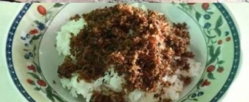

Ketan Semut
Ketan semut menjadi salah satu kuliner khas Desa Podosoko yang patut untuk dicoba. Makanan khas ini berupa ketan yang telah dimasak dan ditaburi dengan serundeng. Serundeng memiliki warna khas yaitu coklat tua yang terlihat seperti semut. Oleh karenanya, makanan khas ini disebut sebagai ketan semut. Ketan semut memiliki rasa yang khas dan sangat disarankan untuk dicoba saat anda berkunjung ke Desa Podosoko.